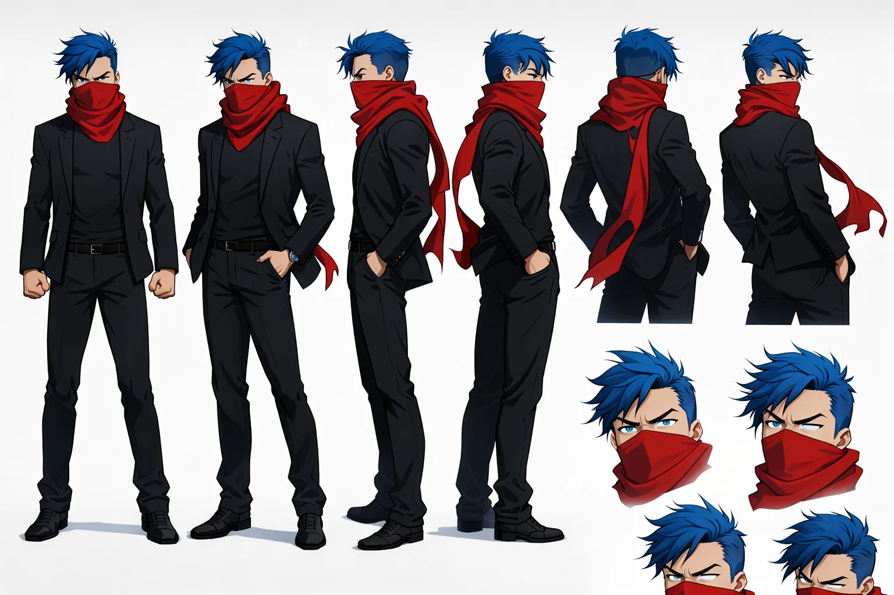
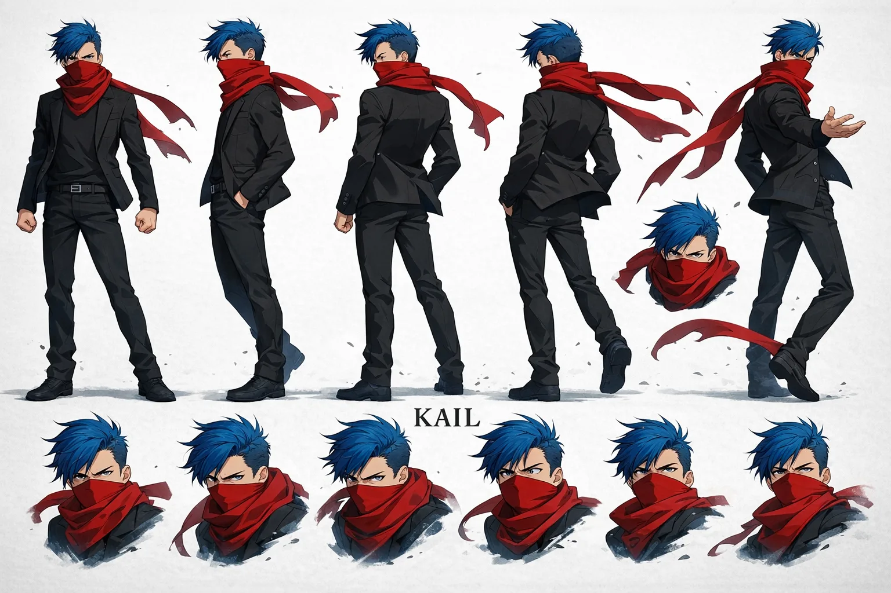

Stable Compendium record
kail
Character dossier / 04
Kail
Newcomer / initiate · masked voice anomaly
Excited enough to keep going, unnerved enough to notice what everyone else has normalized.
- Stable ID
kail- Structural type
- character-section
- Canon status
- unknown
- Spoiler level
- major
Published source content
Core read
Kail is a young Syrin initiate and the last of his lineage after Tiger’s genocide of Syrin 4. He enters the Administration as a newcomer rather than an authority, carrying both genuine excitement and a useful discomfort with practices older characters have normalized.
Voice, black hole and scarf
- After release from Torture, Kail reforms as a mouthless Barrister with a miniature black hole in his throat.
- Marcel wordstreams a temporary containment solution; Tiger then fashions the starlight scarf.
- The scarf always covers his mouth / throat area in ordinary visual depiction and conceals the black-hole anomaly.
- His voice emerges through the scarf-bound anomaly rather than an ordinarily exposed speaking mouth.
- The scarf is hard-coded to Tiger’s root permissions: when Kail attempts to speak truths that threaten Tiger’s narrative, the scarf can override his voice with Tiger’s.
End-state
Codec ultimately repairs Kail’s mouth with the last of his Starsilk, giving him a voice made from old-universe data before sending him into the Partition. Kail remains the sole original survivor across the threshold. The established visual lock remains scarf-over-mouth unless the narrative explicitly requires the repair itself to be visible.
Visual identity lock
- Short/spiky blue hair.
- Black tactical or fitted travel/combat silhouette.
- Red scarf is the dominant accent and remains physically over the mouth in every ordinary depiction.
- Expressions must read through eyes, brow, posture and scarf tension rather than an exposed lower face.
blackscarfhair
Do not change
- Never lower the scarf beneath the chin for convenience.
- If Kail carries a blade, there is exactly one blade total and it is a katana; never duplicate it elsewhere in the composition.
- Never expose an ordinary speaking mouth as the source of his voice.
- Do not treat newcomer anxiety as cowardice.
- Do not detach the black-hole voice anomaly from the 256-year Torture / Zentrum sequence.


08Kail — technical visual sheetCostume, silhouette, hair, accessory and motion notes for the black-and-red design.Attach the matching local image to embed it.